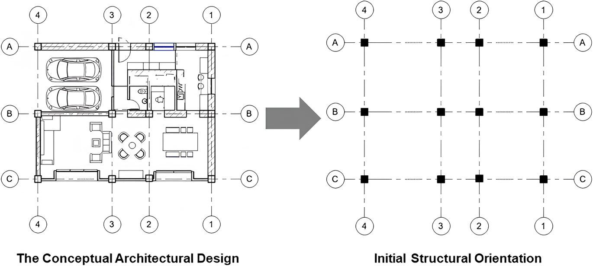

Aplikasi Koordinat Kartesius

◀
▶
Desain Arsitektur:
Seorang arsitek, ketika menggambar denah bangunan atau membuat rancangan teknik, arsitek dan insinyur menggunakan koordinat untuk menentukan letak pintu, jendela, atau dinding secara presisi.